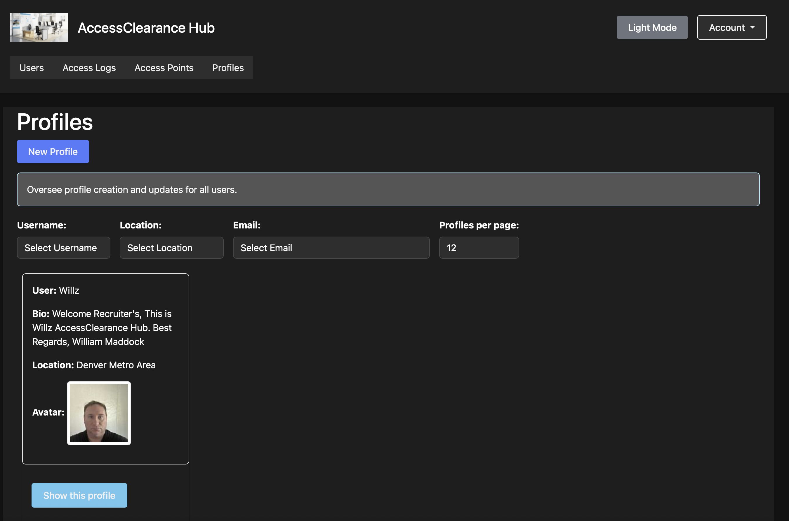

From September through December 2024, I designed and developed the Secure Access Management System as a full-stack Ruby on Rails project at MSU Denver.
The application demonstrates backend development, relational data, authentication and authorization concepts, role-based access control, validation, cloud-backed file management, automated testing, and accessibility-focused interface design.
The deployed educational demo may sleep or change over time. Test accounts and passwords are maintained in project documentation rather than published on this portfolio page.
Project Highlights
- Built a full-stack Ruby on Rails application across four development sprints.
- Implemented role-based permissions for administrative and operational user types.
- Created protected-resource and security-clearance workflows.
- Added validation and permission-aware navigation.
- Integrated Google Cloud Storage through Active Storage for persistent uploads.
- Used PostgreSQL for relational persistence.
- Added responsive Bootstrap interfaces, keyboard navigation, semantic labels, and accessible feedback.
- Wrote automated tests with RSpec and Capybara.
- Configured the application for deployment through Render and Puma.
My Role: Founder and Lead Developer
I owned the project lifecycle:
- Defined scope and application requirements
- Designed the data model and permission structure
- Implemented models, controllers, views, validations, and navigation
- Integrated cloud-backed file storage
- Developed automated tests
- Prepared documentation and seeded demonstration data
- Configured and troubleshot deployment
- Presented the completed project
Core Capabilities
- Role-Based Access Control — different permissions and interfaces by user role.
- Protected Resources — restricted access based on role and clearance rules.
- File Management — persistent uploads through Google Cloud Storage.
- Validation and Feedback — application-level constraints and user-facing status messages.
- Accessible Interface — responsive layout, keyboard support, semantic structure, and readable feedback.
- Automated Testing — model and system tests through RSpec and Capybara.
- Deployable Architecture — Rails, PostgreSQL, Puma, Render, and Active Storage.
Technology Stack
| Area | Technologies |
|---|---|
| Application | Ruby on Rails, Ruby |
| Frontend | ERB, HTML, CSS, JavaScript, Bootstrap |
| Database | PostgreSQL |
| Authorization | Role-based access control and clearance rules |
| Storage | Google Cloud Storage, Active Storage |
| Testing | RSpec, Capybara |
| Deployment | Render, Puma |
| Workflow | Git, four-sprint development process |
Repository Resources
- Models and validations
- Controllers and request handling
- Views and responsive interfaces
- Database migrations
- RSpec and Capybara tests
- Project README
Local Setup
git clone https://github.com/willmaddock/final-project.git
cd final-project
git checkout SprintDeployment
bundle install
bundle exec rails db:create db:migrate db:seed
bundle exec rails server